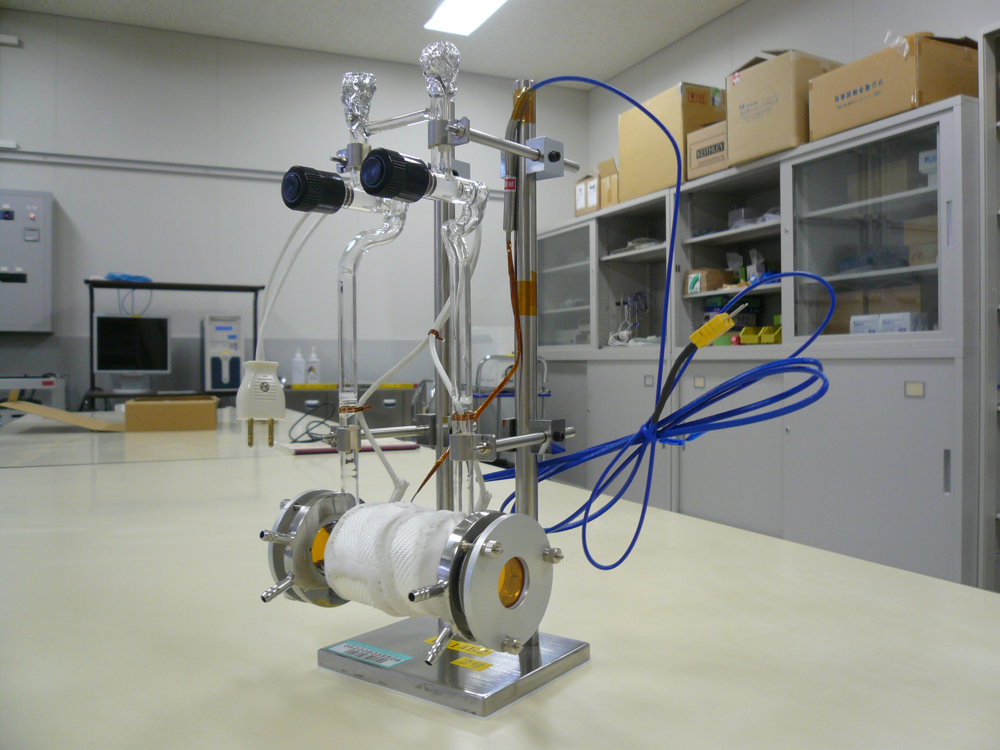
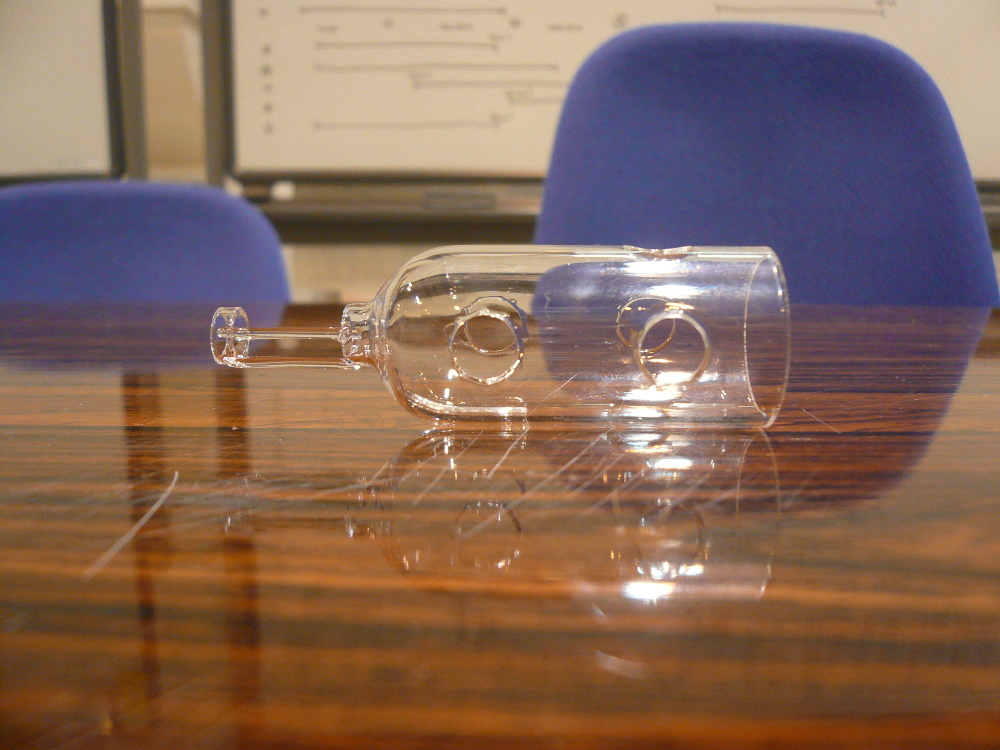
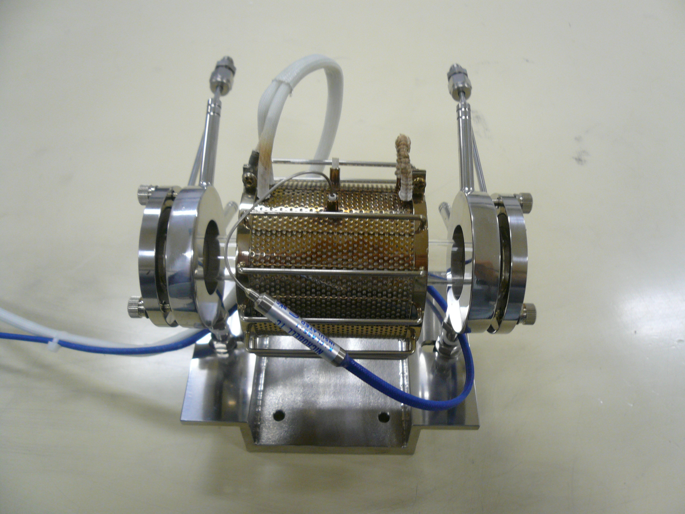
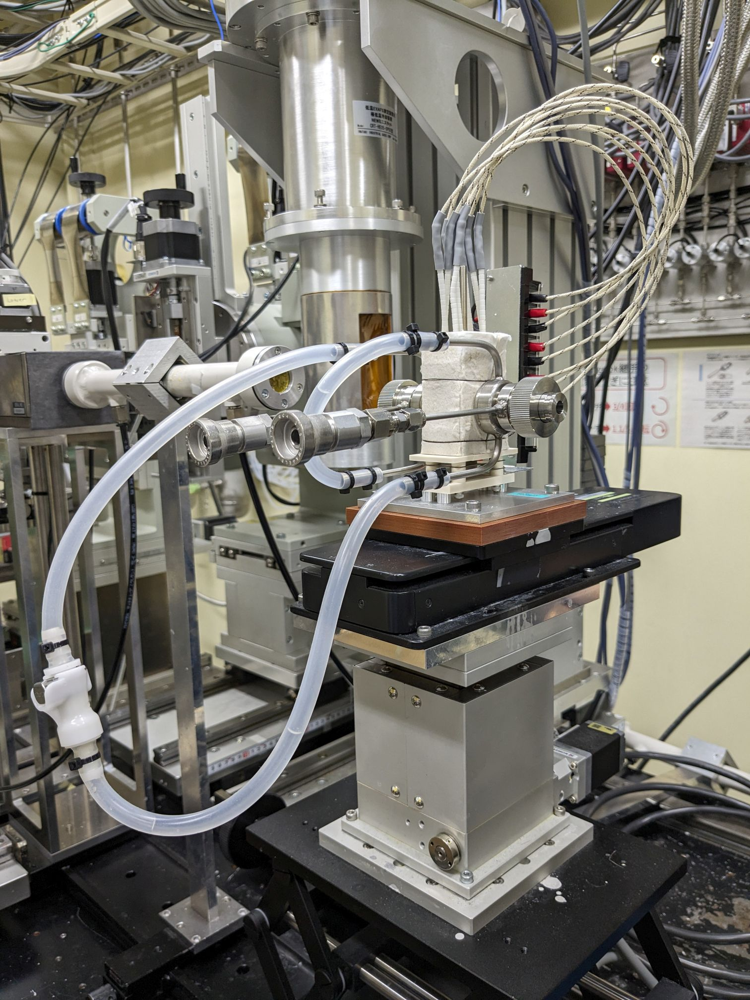
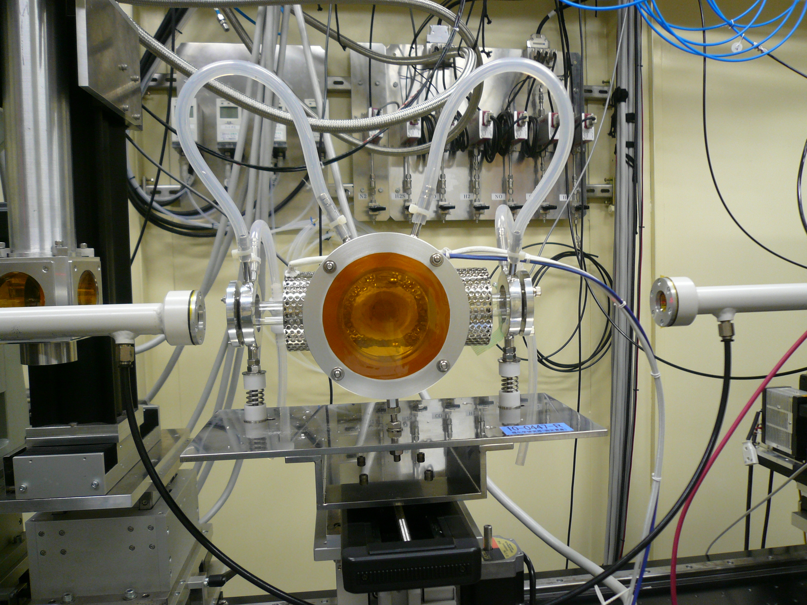

φ7ペレット15mm用試料ホルダー

最高温度：800℃
試料形状：ペレット
試料サイズ：φ7mm×t15mm(最大)
φ10mm×t15mm(最大)
BL14B2の温度調節器で昇温した時の試料周りの温度について：こちら(pdf)を ご参照ください。

最高温度：1000℃
試料形状：ペレット
試料サイズ：φ7mm×t1, 2, 5, 10, 15, 20mm
φ10mm×t1, 2, 3, 5, 12, 20mm
BL14B2の温度調節器で昇温した時の試料周りの温度について：こちら(pdf)を
ご参照ください。

京和真空製 時間分解XAFSフローセル ASPF-20-03-6S
最大使用可能圧力：0.9MPa
最高温度：700℃
試料形状：ペレット
試料サイズ：φ7mm×t10mm以下(内径φ7mmのパイプに詰めて測定)
BL14B2の温度調節器で昇温した時の試料周りの温度について：こちら(pdf)を
ご参照ください。

幕張理化学硝子製作所製 蛍光XAFS測定用石英セル
使用温度：600℃（最高温度：800℃）
試料形状：ペレット
試料サイズ：φ10mm×t1, 2mm
BL14B2の温度調節器で昇温した時の試料周りの温度について：こちら(pdf)を
ご参照ください。